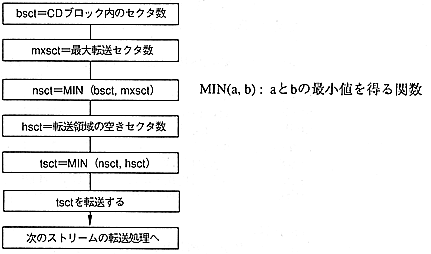
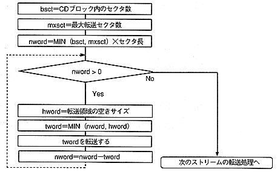

(a) When the transfer area size is in sector units
Since the number of sectors that can be taken out from the sections in the CD block is clear in advance, it can be processed as follows.

(b) When the size of the transfer area is not a sector unit
Since the number of sectors that can be taken out from the section in the CD block is unknown, process as follows.

∙ While the dotted loop is repeated, the next stream cannot be transferred. Therefore, when accessing two or more streams at the same time, it should be transferred by the method (a) except in special cases.
[If the Form1 sector and the Form2 sector are mixed in one stream, there is no choice but to transfer by the method (b).